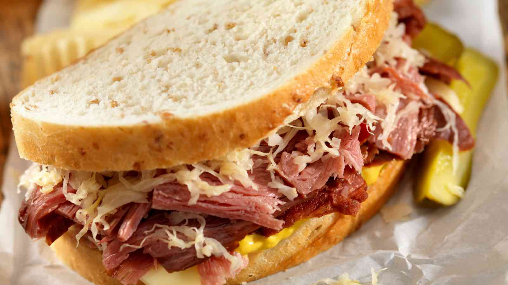

The Classic Deli Sammich

Description:
Everyone loves a nice lunchmeat deli sandwich. Very fast, very tasty, and almost no cleanup.
Ingredients:
- Choice of meat: Chicken, turkey, pastrami, etc.
- Choice of bread- Sourdough
- choice of cheese: Chedder, Feta, Goat
- Choice of sauce: Mayo, Blue cheese dressing, Thousand Island, Caesar Dressing
- Tomatos
- Kalamata Olives
Steps:
- Toast the bread slices.
- Lather the sauce onto each bread slice.
- Pile on the rest of the selected ingredients.